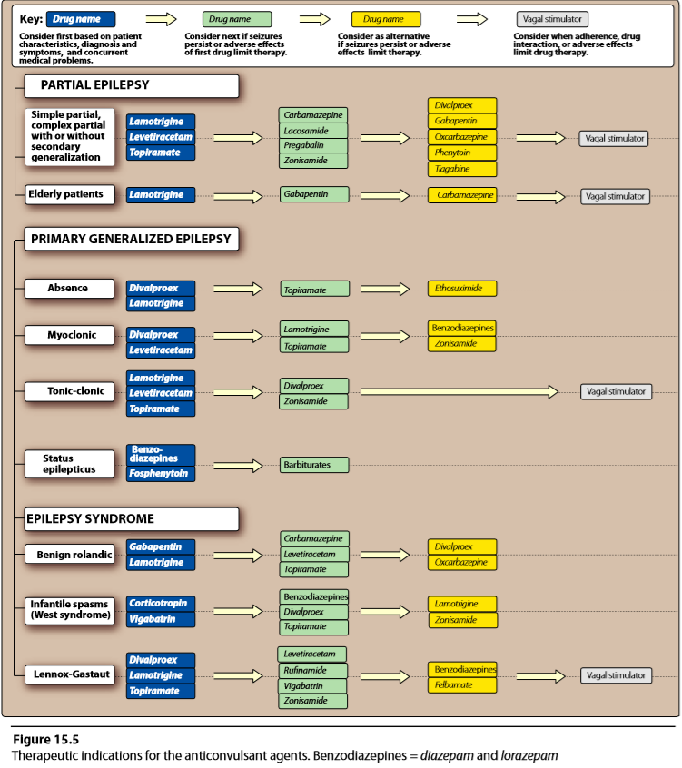
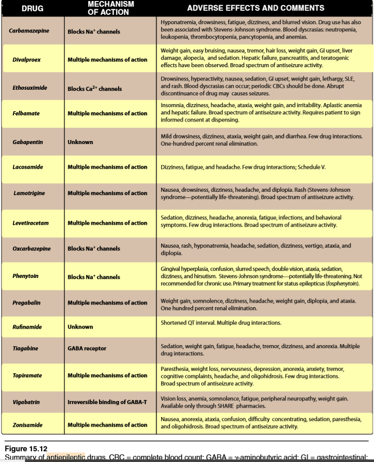
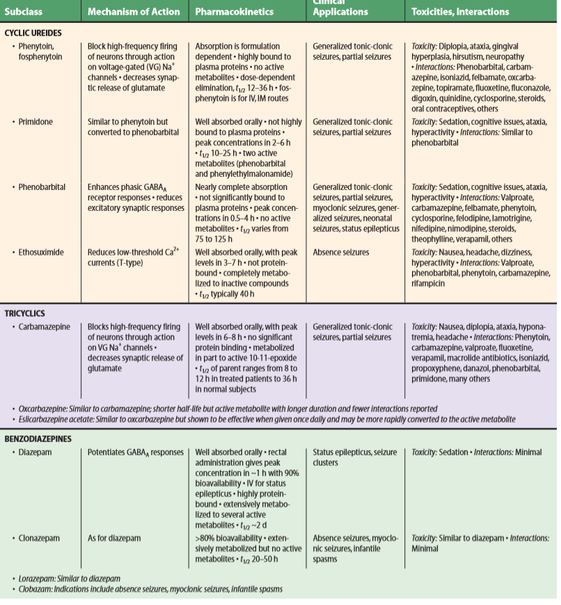
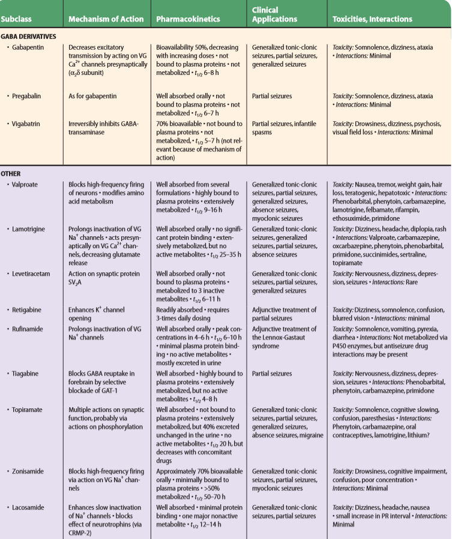
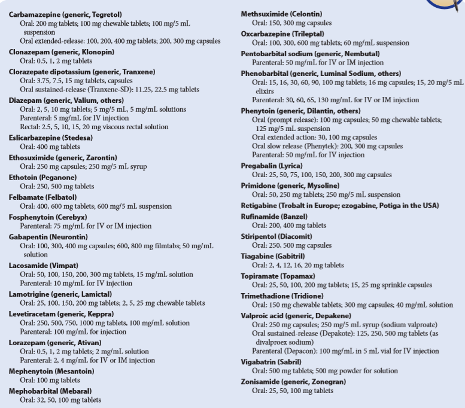

OVERVIEW:
→ 3rd most common neurologic disease
- after cerebrovascular/Alzheimer diseases.
→ different types of seizures and syndromes [depending on site of action ] / several mechanisms
- motor cortex → abnromal movements or generalized convulsion
- parietal or occipital lobe → visual,audioty,olfactory halluginations
→ sudden : sudden, exescive , synchronous discharge of cerebral neurons
→ abnormal electrical activity
- may result in : — loss of consciousness — abnormal movement — atypical or odd behavour — disorted perception
- — limited duration — reoccuarence is often [ if untreated ]
IDIOPATHIC OR SYMPTOMATIC SEIZURE:
→ focal areas may be triggerd:
- alteration in blood gases
- pH
- electrolytes
- blood glucose levels
- changes in enviromental factors (sleep,alcochol etc)
- MRI ( mangetic resonance imaging)
- PET (position-emission tomography)
- SPECT (single-photon emission coherence tomography)
- IDIOPATHIC
→ treated:
- chronically, with — antiseizures drugs or vagal nerve stimulation
B.SYMPTOMATAIC EPILEPSY
→causes: — illictic drug use — tumor — head injury — hypoglycemia — menigeal infection — rapid withdraw of alcochol
→ chronic treatment:
- antiseizure medications
- vagal nerve stimulation
- surgercy
CLASSIFICATION OF SEIZURES:
→ due to : — site of origin — etiology — electrophysiological correlation and clinical presentation
→ classified into two main categories:
- Partial ( or focal )
- Generalzied
A.PARTIAL
→ only a portion of the brain
- part of the one lobe / of hemisphere
→ does not spread
→ not lose of consciousness
→ sensory distortions
→ may occur in any age
→ motor dysfunction [chewing,dirahhea,urination]
→ conciousness is alerted
→ simple partial may lead to complex and then spread to generalized convulsion
→ may occur at any range
B.GENERALIZED
→ begin locally thought both hemispheres
→ convulsive or non-convulsive
→ immediate loss of conciousness
→ period of confusion and exhuastion ( due to depletion of glucose and energy stores)
→ 3 to 5 years of age
→ rapid-eye-blinking
→ generally occur after wakening
→ at any age [ usually puberty or earl adulthood ]
→ high fever
→ tonic-clonic convulsions of short period of time
→ partial or generalized // convuslive or non convulsive
→ life-threatening requires emergency treatment.
MECHANIMS OF ACTION OF ANTI-EPILECPTIC DRUGS:
→ blocking volatage-gated channels
- Na+2 or Ca+2
→ interefering with glutamate transmission
→ some of them seems to have multiple targets within the CNS
DRUG CHOICE:
→ Based on:
- classification of the seizure
- patient-specific variables (age,medical conditions,lifefstyle,personal preference)
- characterstics of the drug ( toxicity , cost, interactions with other medications)


PRIMARY EPILECPTIC DRUGS:
Older epileptics
→ Carbamazepine → Divalproex
→ Ethosuxamide → Phenobarbital
→ Phenytoin → Valporic acid
"Second Generation"
→ Felbamate → Ganbapetin → Lacosamide → Lamotrigine
→ Levetricaetam → Oxcarbazepine → Pregabalin →Rufinamide
→ Tiagabine → Topiramate → Vigabatrin → Zonisamde
→ bidn to GABA inhibitory receptors
- reduce firing
- most often used as an adjunctive therapy
- myoclonic and partial and generalized tonic-clonic seizures
→ Diazepam rectal admin.
→ Carbamazepine
- ↓ propagation of abnormal impulses in the brain by blocking sodium channels
- inhibiting the genration of the repetitive action potentials in the epileptic focus and preventing the spread
- partial / generalized tonic-clonic seizures trigeminal neuralgia /// bipolar disorder
- absorbed slowly and erratically following oral admin.
- metabolite(epoxide) 25% of dose can be inhibited by drugs inhibit UGT → toxicity
- inducer of — CYP1A2 — CYP2C and CYP3A+UGT enzymes
→ ↓ propagation of abnormal electrical acitivity in the brain
- by inhibiting T-type calcium channels
→ limited due to narrow spectrum of activity
→ broad-spectrum of anticonvulsant action
→ multiple proposed mechanisms:
- blocking voltage-dependent sodium channel
- competing with the glycine-coagonist binding site on the N-methyl-D-asparate ( NMDA) glutamate receptor
- blocking calclium channel
- potentiating the action of GABA
→ refractory epilepsies
→ analog of GABA
- does not act at GABA receptors
- neither enhances GABA action
- nor converted to GABA
→ adjunct therapy for partial seizures //// posthreptic neuralgia
→ nonlinear pharmacokinetics
- saturable transport system from the gut
→ excrected unchanged through the kidneys
→ be well tolarated by the elderly population with partial seizures
→ affects volatage-gated sodium channels
- stabilization of hyperexcitable neuronal membranes + inhibition of repetative neuronal firing
→ adjuctive treatment of partial seizures
→ produced euphoria as alazopram → labeled as control substance
→ injectible formulation
→ diziness, headache,fatigue.
→ blocks sodium channel + high-voltage-dependent calcium channels
→ wide variety of seizures — partial — generalized — typical absence seizures — Lennox-Gastaut syndorme
→ approved for bipolar disorder
→ metabolized primarly N-2 glucoronide through the UGT pathway.
→ half-life ( 24-35 hours) is ↓ by enzyme inducing drugs( e.g.// carbamazepine,phenytoin )
- ↑ by greater than 50% with the addition of valporate.
→ well tolarated from elderly
→ adjucnt therapy of — partial — generalized tonic-clonic seizures in childrens and adults
→ exac moa is not known
→ high affinity for a synaptic vesicle protein
→ well absorbed orally and excrected in urine unchanged
→ DOES not interact with CYP or UGT metabolism systeme.
→ dizziness,sleep distrubances,headache,weakness
→ prodrug rapidly ↓ to the 10-monohydroxy metabolite
- responsible for anticonvulsant activity
- preventing spread of the abnormal discharge
→ less potent inducer of CYP3A4 and UGT than Carbamazepine
→ nause,vomiting,headache and visual distrubances.
→ staticus epilepticus
→ very high concentrations also block voltage-dependent calcium channels [ release of monoaminergic neurotransmitters]
→ partia — generalized tonic-clonic — status epilepticus
→ 90% bound to albumin
→ CYP2C and 3A families + UGT enzyme system
→ zero-order pharmacokinetics
→ small ↑ in daily doses can ↑ serum conc. → drug toxicity
→givingal hyperplasia
→ long-term use cause development of peripheral neuropathies and osteoporosis
→ Foshphenytoin
- produrg is rapidly converted into phenytoin
- intramusculary
→ inhibiting excitatory neurotranmitter release
→ partial onest seizure → neuropathic pain associatedw with diabetic peripheral neuropathy → fibromyralgia
→ 90% eliminated renally
→ no indication of CYP involvment
→ drowsiness,bullred vision,weight gain,peripheral edema.
→ ↓ number of partial onest seizures.
→ binding to albumin and a1-acid-glycoprotein [greater than 95%]
→ CYP3A family of enzymes
→ fatigue,diziness,git upset
→ has not approved for and should not be used for any other indication.
- blocks voltage-dependent sodium channel
- ↑ frequency of chloride channel opening — by binding to the GABAa receptor —
- high voltage-calcium currents (L-type) are ↓ by topiramate
- it is carbonic anhydrase inhibitor and may act at glutamatme (NMDA) sites.
- partial and generalized epilepsy and migraine
→ inhibits CYP2C19 and induced by phenytoin and carbamazepine
→ somnolence,weigh loss,paresthesias
→ glaucoma,oligohidrosis,hyperthermia
→ Divalproex sodium converted to valproate when it reaches the git.
- developed to imprive gastrointestinal tolerance of valporic acid
→ induce sodium channel blockage
- blockage of GABA-transaminase
- action at the T-type calcium channels
- broad-spectrum of activity against seizures
- partial and primarly seizures
→ bound to albumin (greater than 90)
→ visual filed loss ranging fro mild to se vere
→ SHARE PROGRAM pharmacies
→ blockage-of both voltage-gated sodium channel and T-type calcium currents
→ limited amount of carbonic anhydrase activity
→ metabolized by CYP3A4 isozyme
→ may cause kidney stones,oligohidrosis
VAGAL NERVE STIMULATION
→ requires surgical implant of small pulse generator with a battery and a lead wire for stimulus
→ treatment of depression




{kind=link}
{kind=link}
{kind=link}
{kind=link}
{kind=link}
{kind=link}
{kind=link}
{kind=link}